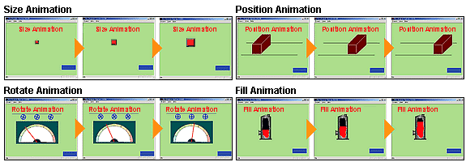
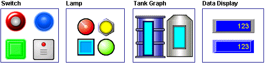
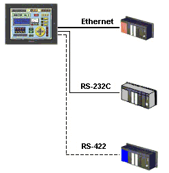

|
|
|
|
|
|
|
|
"How can I create realistic and animated screens easily?"
"Can I quickly and easily connect several PLCs to a single control panel?"
"What types of panels can I create with Vijeo-Designer?"
"What types of parts are available for creating panels in Vijeo-Designer?"
Vijeo-Designer's versatile animation functions make screen creation a snap. It also provides a wide range of multi-purpose components that you can quickly set up and work confidently within Vijeo-Designer's easy-to-use graphical interface.


The table below lists the available types of Animation.
|
Animation |
Overview |
Purpose |
|
Touch |
Adds touch-switch functionality to drawings. |
For operation and monitoring. Use these functions to enable a drawing to operate as a switch or lamp. |
|
Color |
Changes the colors of drawing so that the graphic can be used as a lamp. |
|
|
Fill |
Fills in the drawings so that it can be used as a graph. |
|
|
Value |
Displays the value of a variable plus enables inputting data from the keypad. To add Value animation, draw a text object and type the pound symbol (#) |
|
|
Rotate |
Rotates drawings according to variable values. |
For graphical animation. These functions add movement (such as rotation and movement along axes) to drawings. Use these functions to create animated panels. |
|
Position |
Moves drawings according to variable values. |
|
|
Size |
Enlarges/shrinks the size of drawings according to variable values. |
|
|
Visibility |
Shows/hides drawings according to variable values. |
For more information, see Section 8.1, Animating Objects, Chapter 9, Creating Switches, Selectors, and Actions, Chapter 10, Creating Lamps, and Chapter 11, Displaying and Inputting Data.
Vijeo-Designer provides support for easy setup of connections to multiple pieces of equipment. Vijeo-Designer also supports a wide range of equipment drivers that you can use for transmitting data without having to program.

For more information, see Section 5.1, Communications.
With Vijeo-Designer, you can easily create standard panels for operation and control by combining various components such as parts, graphical objects, and animations. You can create the panels you want relevant to your organization and its operations. Typical panels that you can create are operation panels, monitor panels, popup window panels, and alarm panels, are shown below.
Parts are essential features for creating panels in Vijeo-Designer. With these functions, you can create different types of panels, such as operation panels, monitor panels, alarm panels, and popup window panels. The table below lists the parts available in Vijeo-Designer.
|
Part |
Operation |
Description |
|
Switch |
Bit |
Turns BOOL variables on/off. |
|
Word |
Writes constant values or variable values to the specified word address. |
|
|
String |
Either writes a string to the defined string variable or adds a string to the defined string variable. |
|
|
Panel |
Specifies the change panel operation, either to the previous panel or to an existing panel for the target. |
|
|
Popup |
Specifies whether the popup window should close or open. |
|
|
Alarm |
Specifies alarm operations, such as cursor on/off, scroll up/down, page up/down, jump to a specified line, go to newest alarm, and go to oldest alarm. |
|
|
Sound |
Sets the operations for sound (play sound or stop sound). |
|
|
Language |
Sets the operations for the language (change system or user application language.) |
|
|
Script |
Runs the script when the switch is touched. |
|
|
System |
Sets up system operations such as restarting or exiting runtime, and opening the Configuration Menu. |
|
|
Delay |
Sets the time delay for an operation to execute after a touch. Also sets the touch delay for bit monitoring. |
|
|
Video |
Provides several video touch operations. |
|
|
Radio switch |
Using multiple radio switches, only one switch within the same group number can be ON at a time. |
|
|
Lamps |
Changes colors or text depending on the value of the variables. |
|
|
Special |
Graphical lamps, such as a tower lamp or a rotary lamp. |
|
|
N-State |
Multiple state lamp changes colors or text depending on variable values. |
|
|
Data Display |
Numeric display/input |
Displays variable values as numerical values. You can also input numbers from keyboard. |
|
Text display/input |
Displays text stored in String variables. You can also input text from the keyboard or keypad. |
|
|
Date display |
Displays the date of the target machine's internal clock. |
|
|
Time display |
Displays the time of the target machine's internal clock. |
|
|
Bar Graph |
Vertical |
Represents variable values as bar graphs. The direction of the bars can be either vertical or horizontal. |
|
Horizontal |
||
|
Meter |
Represents variable values as a meter graph. |
|
|
Message Display |
Displays the test string associated with the current value of a specified variable. |
|
|
Image Display |
Displays the image associated with the current value of a specified variable. |
|
|
Selector |
A type of switch that displays the current state of a specified variable and runs operations when touched. |
|
|
Alarm Summary |
Lists alarm messages and provides a record of all alarm messages. You can also log alarm messages to disk. |
|
|
Trend Graph |
Displays the current variable values in the Trend Graph. |
|
|
Video Display |
With Video you can:
|
|